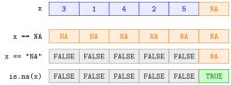

Missing Values¶
Definition¶
A missing value in R is written NA, short for "not available". It marks an entry whose value is unknown and can appear in a vector of any type.
is.na(x)returns a logical vector that isTRUEexactly at the missing entries ofx; it is alsoTRUEfor the numerical valueNaN("not a number", for example0/0).complete.cases(df)returns, for each row of a data framedf,TRUEif the row has no missing value in any column.- Many summary functions have an argument
na.rm("removeNAs"); withna.rm = TRUEthey ignore the missing entries in that one calculation.cor()andcov()useuse = "complete.obs"instead.
Interpretation¶
NA means "there is a value, but we do not know it": a seniority not recorded for a recent hire, a bonus that was not reported, a survey question that was skipped. R takes this literally. Any calculation whose answer depends on the unknown value is itself unknown, so NA + 1, NA > 5 and mean(c(3, NA)) are all NA.

The figure compares three ways of looking for the gap in a vector of seniority codes whose sixth entry is missing. x == NA asks "is this equal to an unknown value?", and the answer is unknown in every position. x == "NA" compares with the two-letter text "NA", which is not the same thing as a missing value: it is FALSE for the observed numbers and NA at the gap. Only is.na(x) gives a clean TRUE/FALSE answer.
Once the gaps are found, there are two strategies. You can remove incomplete observations, either column by column with !is.na() and logical subsetting or for all columns at once with df[complete.cases(df), ]; this changes the data and may remove many rows. Or you keep the data and tell each function what to do: mean(x, na.rm = TRUE) averages the observed values, and cor(x, y, use = "complete.obs") uses the pairs where both values are observed. The second strategy changes nothing in the data itself (summary statistics in R).
Missing values also follow the rules of logical operators: any(c(TRUE, NA)) is TRUE because one TRUE settles the question (counting with logical vectors), and table() leaves NA out unless asked (contingency table).
The classic mistake is x == NA, which never finds anything. A second one is to write na.rm = TRUE without asking why values are missing: if the missing bonuses are mostly those of low earners, the average of the reported bonuses is too high.
Key Results¶
- Arithmetic and comparisons with
NAgiveNA, includingNA == NA. is.na(x)is the only reliable test;sum(is.na(x))counts missing entries andany(is.na(x))tells whether there are any.- The text
"NA"is an ordinary character value, not a missing value. is.na()is alsoTRUEforNaN, butis.nan()isFALSEforNA.na.rm = TRUEaffects only that function call; the data are unchanged.cor()andcov()useuse = "complete.obs"instead ofna.rm.df[complete.cases(df), ]keeps the rows with no missing value in any column.
Examples¶
1. Finding missing values. Seniority codes of ten workers; the sixth is unknown.
sen <- c(3, 1, 4, 2, 5, NA, 2, 3, 1, 4)
is.na(sen)
#> [1] FALSE FALSE FALSE FALSE FALSE TRUE FALSE FALSE FALSE FALSE
any(is.na(sen))
#> [1] TRUE
sum(is.na(sen))
#> [1] 1
which(is.na(sen))
#> [1] 6
sen == NA
#> [1] NA NA NA NA NA NA NA NA NA NA
sen == "NA"
#> [1] FALSE FALSE FALSE FALSE FALSE NA FALSE FALSE FALSE FALSE
Only is.na() locates the gap. The comparison with "NA" first turns the numbers into text and then finds no match.
2. na.rm leaves the data alone. The average with and without the missing entry.
sen <- c(3, 1, 4, 2, 5, NA, 2, 3, 1, 4)
mean(sen)
#> [1] NA
mean(sen, na.rm = TRUE)
#> [1] 2.777778
length(sen)
#> [1] 10
The second mean is , the average of the nine observed values. sen still has ten entries afterwards.
3. Removing incomplete rows. A small made-up extract of a wage data set with gaps in two columns, cleaned by hand and with complete.cases().
wage <- data.frame(
Age = c(23, 37, 41, 29, 64, 52),
Dept = c("Sales", "Engineering", "Sales", NA, "Management", "Engineering"),
Seniority = c(1, 3, 4, 2, 5, NA),
BasePay = c(52000, 89000, 74000, 61000, 120000, 98000)
)
# by hand: rows observed in both Dept and Seniority
ind1 <- !is.na(wage$Dept)
ind2 <- !is.na(wage$Seniority)
wage[ind1 & ind2, ]
#> Age Dept Seniority BasePay
#> 1 23 Sales 1 52000
#> 2 37 Engineering 3 89000
#> 3 41 Sales 4 74000
#> 5 64 Management 5 120000
# all columns at once
complete.cases(wage)
#> [1] TRUE TRUE TRUE FALSE TRUE FALSE
wage_cleaned <- wage[complete.cases(wage), ]
nrow(wage_cleaned)
#> [1] 4
Rows 4 and 6 have a gap and are removed; four complete rows remain. Here both methods agree because only Dept and Seniority contain gaps.
4. Different functions, different arguments. cor() has no na.rm; it uses use. And NaN counts as missing for is.na().
age <- c(23, 37, 41, 29, 64, 52)
sen <- c(1, 3, 4, 2, 5, NA)
cor(age, sen)
#> [1] NA
cor(age, sen, use = "complete.obs")
#> [1] 0.9453086
is.na(c(1, NA, 0/0))
#> [1] FALSE TRUE TRUE
is.nan(c(1, NA, 0/0))
#> [1] FALSE FALSE TRUE
With use = "complete.obs" the correlation is computed from the five workers whose seniority is known.
Prerequisites¶
Related Concepts¶
- Counting with Logical Vectors
- Summary Statistics in R
- Function Arguments and Defaults
- Contingency Table
- Reading and Writing CSV Files
- Logical Operators
Sources¶
- Programming for EOR · Week 2
- Lecture 2 script, Part 2 (Working with Data Frames, Built-in Functions, and Factors), sections Missing values and Missing Values (Built-in Functions); Part 1 (Conditional Operations and Sequences), section Checking conditions across a vector
Aliases: NA, not available, is.na(), is.na, na.rm, na.rm = TRUE, complete.cases(), complete.cases, missing data, NaN Keywords: NA, is.na(), na.rm = TRUE, complete.cases(), use = "complete.obs"
Last updated: 10 November 2026 16:43
Missing ValuesContingency TableCore dplyr VerbsGrouped Summariesif–else StatementVectorized ifelse()Relational JoinsSummary Statistics in RComparison OperatorsLogical SubsettingData FrameCounting with Logical VectorsFunction Arguments and DefaultsReading and Writing CSV FilesLogical Operators